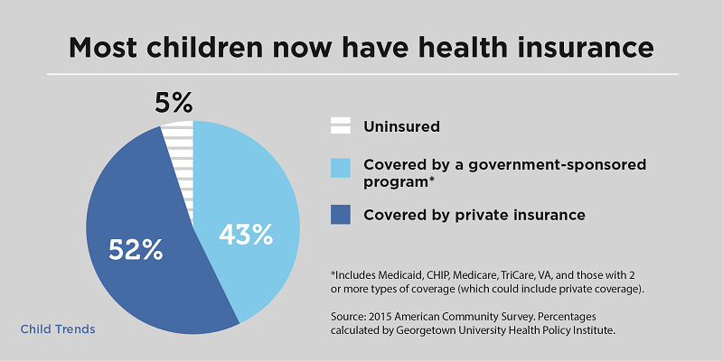

What is Health Insurance?
Health Insurance is an insurance that covers you and your loved ones at the time of medical emergencies by paying for the expenses incurred during the treatment. An insured has to pay the premium as per the plan selected and the cumulative amount is thus paid during any medical contingency. In India, it is also called mediclaim. Health insurance also acts as a tax saving tool by providing tax exemption under section 80D.
Health Insurance can be paid in two ways depending upon the type of Health Insurance cover. Either the insured can pay the expenses out-of- pocket and reimburse the same later from the insurer (insurance provider), or the payment can be made directly to the hospital or medical facility provider by the insurer.
Health Insurance And It's Importance
How many times do you need to visit a hospital to finally realise that you require a health cover? It just takes one medical emergency to make you understand how vulnerable you are when you have to foot the hospital bills. Whether you are rich or poor, young or old, being diagnosed of an illness that requires hospitalisation could be one hell of an ordeal. Diabetes, stroke, heart ailments, renal failure and similar other lifestyle diseases are increasingly becoming common these days. Medical science, thankfully, has improved in leaps and bounds and there are now super-speciality hospitals where many life-threatening diseases can be treated. But it all involves huge cost. The wealthy may be able to afford these expenses but what about the average middle-class people? Where do they get the money to meet the costs? For illnesses that call for surgery or hospitalisation, the medical expenses may easily run into six digit figures. Now imagine having to pay a huge amount within a few hours' notice. That surely can make you paranoid. This is exactly where a health insurance policy, commonly known as mediclaim in India, comes in to cover your expenses to a great extent and help you retain peace of mind.
What should be my ideal health insurance cover?
The cost of mediclaim, as already said, depends upon the sum assured, the age of the insured, present health condition and previous medical history. A higher sum assured attracts a higher premium. So what will be your ideal mediclaim requirement? Well, there's no one-size-fits-all amount or a thumb rule here. Factors to consider in this regard includes a person's health condition, age, lifestyle, life stage, family illness history and of course affordability. Remember that most mediclaim policies extend "additional benefits" like ambulance charges, daily allowance, and other expenses for hospitalisation. But most of these so-called benefits are superfluous. They usually increase the premium amount. Try to stay away from such mediclaim plans and stick to something simple.
Health insurance takes care of your medical expenses and ensures that out-of-pocket expenses are curtailed upto the Sum insured.
A health insurance policy ensures that you can avail cashless treatment at a network hospital without having to pay for them, typically covering 30 days and 60 days pre and post hospitalization, respectively, in most of the Health Insurance plans.
One can add value to the Base Health Insurance Plan by complementing them with additional add-on products such as Personal Accident (PA) Cover, Critical Illness (CI) Cover and Top-Up. These products are available at a very nominal cost adding benefits which are not part of the Base Health Insurance plan. For Example, A PA plan helps by providing coverage for disability, which is typically not covered under Health Insurance. An individual need not go through any waiting period and medical checkups for a PA cover.
Health Coverage: Health Insurance plans have enhanced offerings to cover a wide spectrum of requirements, like a family health plan offers complete cover to all members of a family under a single umbrella.
Medical Bills: Coverage against medicinal expenses incurred, including pre and post hospitalization Pre-existing Diseases: Coverage for any pre-existing disease is provided to you after a certain waiting period. Claim Reimbursement: Coverage for expenses incurred for hospitalization due to a medical.
Tax Rebate: Annual premium paid for health coverage are subject to tax exemption u/s 80D of ITA, 1961. Tax exemption ranges from Rs. 25,000 to Rs. 60,000.
Other Benefits: As an innovative feature, OPD expenses are now covered under few Insurer plans and don’t require hospitalization for minimum 24 hrs to claim reimbursement. Stand alone OPD plans are also available in the market.
It is important to purchase the best insurance policy for Kids in order to ensure that your kids lead a happy life and has a secure tomorrow. The child policy not only covers your kid in any eventuality but also provide health coverage all through his life. These plans offer attractive returns. The child is paid the sum assured in the event of parent's death, disability, or critical illness, as per the terms and conditions of the plan opted. Few plans have the provision of regular income in case of parent's death. Whatever be the way of return, there are several ways to offer financial cover to the child in case of an eventuality.
To decide the best insurance policy for kids, there are certain measures that parents should remember before making their final selection. A policy for child is purchased to ensure him/her a long-term care. The following points require your attention in this regard:
You and your child’s age
Daily Benefits
Coverage level
Elimination period (waiting period)
Benefits included
Benefit period
No matter, whichever the plan you choose, your child should be covered. You should never forget that health coverage is the foremost need of every individual. Looking into the need of health cover for your child, the Apollo Group of Hospitals, the largest Healthcare group in Asia has joined hands with Munich Health, newest business segment of Munich Re, to provide innovative health cover to Indian citizens.
We give an option of covering new born babies with the waiting period of four years in our Exclusive and Premium variants of Easy health plan. The same coverage is provided in Maxima, India's No.1 360º plan.
Health insurance policy Terms and Condition
The JIVAN SANJEEVAN insurance company policy you very nice benefits, health insurance you had any disease or any kind of incident power of the same reasons you have to go to the hospital and at the same time you do not have money and not have any recourse. Then the bad times will help the jivan sanjeevan. *Health insurance note.• Jivan sanjeevan insurance company insured the insurance only applies if the course of treatment in hospital costs involved well exceed 15 thousand to thousand less than the insurance shall come into force if the insurance will be invalid.• Jivan sanjeevan insurance health insurance of any illness or accident in the hospital during treatment judy spent more than 15 thousandjivan sanjeevan an insurance company if insurance will help insurance holder to 2.5 lakh.• Jivan sanjeevan insurance company insured company insured the money will not last until then the insurance holding company does not have the roper paperwork after paperwork health insurance department will take action did not preclude any action the day after the insurance holder there of insurance will pay.• The desease will not be considered for six months before the exit of the policy.• The policy will take maximum forty-five dyas ot become active.Types of Health Insurance Plans in India:
There are a variety of insurance plans designed to cater to different stratas of society. According to your needs, you can select a plan under any of the following categories.
Individual Health Insurance Policies:
These policies are designed for one person. The premiums on these plans are low as the risk is borne for only one person. Premiums, however, depend on a variety of factors such as age, previous medical conditions, location, and so on. The plan will cover a number of illnesses as stated in the terms of the policy. The costs usually taken care of include in-patient care, pre and post-hospitalisation, medical examination charges, laboratory charges, maternity care expenses, and consultation fees.
Family Floater Health Insurance Policies:
These plans are designed for multiple members of a family. Instead of taking separate policies, the parents, along with minor children (usually up to 2 children) can be covered under one plan. Some family floater plans cover up to 15 people. Depending on your insurance provider, each insured member will receive an equal amount of coverage, or all members may receive a combined sum. With a combined sum, if one family member requires a substantial amount for treatment receive, they can take it from the entire sum assured. This is a big advantage as it helps balance out the cost of those who need to make a claim and those who do not. The premiums for these plans are generally higher, but will be a money saver because one need not spend on multiple policies.
Senior Citizen Health Assurance Plans:
Anyone who has attained the age of 60 years will be eligible for senior citizen plans. These plans usually bear lower premiums or discounts on premiums. Insurance companies might require a medical check-up before they sell the plan. There are just a handful of companies that offer exclusive senior citizen health insurance plans. These plans are designed specifically to cater to the medical needs of the aged.
Critical Illness Plans:
These plans are designed to fund specific illnesses. A critical illness can result in permanent disability or even death. If one has a family history of a specific disease or is more prone to getting a specific illness, then these plans are suitable. Critical illnesses generally covered include cancer, organ transplant, multiple sclerosis, blindness, heart valve surgery, coma, heart attack, paralysis, kidney failure, and so on. Critical illness plans may be offered as a standalone plan or as a rider that can be attached to a base plan.
Maternity Health Insurance:
As the name states, these plans specifically cater to women who plan on bearing children. Maternity plans may be offered as a standalone plan or as a rider that can be attached to a base plan. The coverage offered under this plan covers the mother and the newborn, end-to-end pre-natal and post-natal expenses incurred, complications that may arise and hospitalisation costs.
Group/Employee Health Insurance Schemes:
Many companies offer health insurance to their employees to safeguard their interests, make the job position attractive and to mitigate risks. These schemes are designed to include and exclude members as they join and leave the organisation. Premiums are relatively low and the coverage offered is more lenient in terms of covering pre-existing illnesses and so on.
Preventive Healthcare:
Preventive healthcare includes regular check-ups and care received in order to prevent a disease, cancer or illnesses. Annual physical exams are one way of checking for early symptoms and nipping any problems in the bud. Preventive health care insurance takes care of these costs associated with preventive healthcare measures.
Personal Accident Covers:
Accidents can occur at any time and at any place. Unforeseen events can lead to major injuries that could seriously put a dent in one’s pocket. Personal accident insurance takes care of the costs that arise out of accidents. These plans provide compensation in case of death, disablement, injury, impairment or mutilation as a result of violent, hazardous, visible and external means. Accidents that are covered include road, rail, water and air. These plans may be a benefit of the base plan or could be attached as a rider.
What Expenses Do Health Insurance Plans Cover?
Depending on your insurance provider and the plan selected, you can be covered for a variety of expenses related to medical care, surgeries and treatments. Given below are some of the major expenses covered under health insurance plans.
Inpatient Care:
These include expenses incurred during hospitalisation for at least 24 hours. Expenses covered include room charges, ICU charges, operation theatre charges, surgeon’s fee, doctor’s fee, anaesthesia, oxygen, blood and so on.
Pre-hospitalisation Expenses:
Any medical expenses incurred for usually 30 days to 60 days before hospitalisation will be covered. These expenses can include diagnostic tests, reports, prescribed medication, investigative tests, et cetera.
Post-hospitalisation Expenses:
Any medical expenses incurred for usually 30 days to 180 days after hospitalisation will be covered. These expenses can include follow-up visits with the doctor, additional diagnostic tests, reports, prescribed medication, et cetera.
Day Care Procedures:
Day care procedures include chemotherapy, dialysis, appendectomy, angiography, colonoscopy, radiotherapy, hydrocele, lithotripsy, eye surgery, piles or fistula, prostate, sinusitis, liver aspiration, sclerotherapy. Insurance plans can cover anywhere between 70 to 400 day care treatments. Some high-end policies may cover every single day care procedure.
Organ Donor Costs:
Medical expenses incurred by organ donors might be covered under insurance plans. This means that if someone is donating an organ to you, their expenses will be covered under your health insurance plan.
Domiciliary Hospitalisation:
Any treatments taken at home that exceeds a period of 3 days will be covered.
Ambulance Cover:
The health insurance plans usually cover up to a certain sum for the ambulance service.
Health Check-up:
General health check-ups might be covered under health insurance plans depending on the insurance provider. Preventive health check-ups are encouraged to catch illnesses at early stages so that it can be treated with minimal expenses.
Vaccinations:
Some plans cover vaccinations required in case of dog bites, bee stings, etc.
Critical Illnesses:
Treatment of critical illnesses can be exorbitant. The coverage of these illnesses might be inbuilt in the base plan or can be added as a rider option. Critical illnesses include heart attack, stroke, multiple sclerosis, blindness, AIDS, coronary artery disease, cancer, viral hepatitis, major organ transplant, paralysis, major burns, coma, terminal illness, motor neurone disease, loss of speech, loss of hearing, Parkinson’s, encephalitis, meningitis, chronic lung disease, chronic liver disease, etc.
AYUSH Treatment:
Alternative medicine has always held an important place in the field of medicine. In India, many people turn to alternative methods quite often. AYUSH stands for Ayurveda, Yoga and Naturopathy, Unani, Siddha and Homoeopathy. Health insurance providers have understood the need to cover such treatments and offer coverage to those who opt for it.
Second Opinions:
Expenses incurred in getting a second opinion may be covered under your plan. This greatly depends on the insurer and the type of plan you have selected. Second opinions are very much necessary when getting treated as they provide either confirmation of the illnesses or question whether the treatment is unnecessary. In some cases, the insurance provider will arrange for a second opinion from their own panel of medical practitioners.
Hospital Cash:
When you are hospitalised, there will be day-to-day expenses that need to be met for yourself and for your caretaker. These expenses include food, toiletries, and anything that might be required for your hospital stay. Insurance plans provide hospital cash as an inbuilt feature or a rider plan. The insurer will provide a set amount of money per day of admission in the ICU and the hospital to help meet these expenses and compensate for the loss of income during this period.
Emergency Evacuation:
In case of emergencies, if the patient needs to be transported to another hospital, the insurance plan will cover the costs associated with shifting hospitals in order to get the suitable treatment.
Exclusions: What Your Health Insurance Won’t Cover
Under certain circumstances, the health insurance providers are not liable to pay for the costs of treatment. These exclusions are mentioned upfront in the policy document. It is very important to read what is not covered under your policy and the limits imposed on certain illnesses and facilities. While the exclusions different between policies and insurance companies, the general exclusions have been listed below:
- There is a waiting period of 30 days from the inception of the policy. After this period, the risk coverage will come into effect. Some insurance providers waive this period, especially for group policies.
- A waiting period is imposed for coverage of pre-existing diseases and other specified ailments. Depending on the disease, the plan selected and the provider, this period could range between 2 to 4 years.
- Although most policies now cover AYUSH Treatment:s since it has gained importance and recognition, some policies will not cover such treatments. AYUSH includes Ayurveda, Yoga and Naturopathy, Unani, Siddha and Homoeopathy,.
- Dental treatments
- Certain optical procedures
- Genetic disorders
- Psychiatric disorders
- Injuries resulting from suicide attempts
- Injuries or ailments resulting from hazardous activities, criminal acts, acts of negligence and so on
- AIDS and HIV
- STDs and other related illnesses/illnesses of similar nature
- Treatments taken against the recommendations of doctor
- Unnecessary diagnostic tests, treatment, post-care procedures
- Cosmetology, plastic surgery, gender change, hormonal replacements, etc.
- Treatment/diagnosis undertaken outside India or by an unqualified medical professional
- Expenses for rest and rehabilitation of common illnesses of mild severity
- Nuclear risks
- War, civil unrest, terrorism and related acts
- Maternity, newborn, complications arising out of childbirth, complications with the child, but there are specific policies to cover such costs
Who is Eligible for Health Insurance?
In order to avail a health insurance policy, there is usually a certain criteria that must be met. Insurance companies set eligibility requirements according to risk assessment and ability to pay premiums. Under insurance, there are two parties that can be insured - the proposer and the dependent.
- Proposer/Policyholder: The minimum entry age is set at 18 years/21 years. The maximum age for the policy could be anywhere between 60 years to 100 years, or could be extended for the whole life.
- Dependents: The spouse, parents or children may be allowed to be protected under the same policy depending on the type of policy. For children, the entry age can be from as young as 90 days. Children can usually be insured under the parent’s policy for up to the age of 18 years which may be extended to 25 years.
- Renewability: Health insurance policies are usually renewable for a lifetime, but this may be subject to medical screening beyond a certain age and an increase in premium.
While taking a policy, it is important to declare all health issues upfront. If the insurance provider finds falsified or hidden information later, they can reject your health insurance claim. If you are a smoker and/or drinker, you need to disclose this information as well. Any pre-existing conditions should also be disclosed so as to not risk being rejected for financial cover later on.
Things to Consider while Choosing a Suitable Health Insurance Plan:
When it comes to taking a health insurance policy, there are a number of things that could influence the cover you get, the premiums you pay and the overall satisfaction of the policy.
How much cover you need: While choosing a policy, you need to take into consideration the rising costs of medical treatment, the premiums you can afford and how much cover would you be satisfied with. Choose a policy that will take care of most of your expenses if any illnesses were to arise.
What is Excluded: Ensure that the policy offers substantial cover without too many exclusions. General exclusions are acceptable as the insurance companies are willing to bear the risk only up to a certain extent depending on the policy you choose and the premium you are willing to pay. If you have pre-existing illnesses, you can try to find a policy that will specifically cater to your needs while eliminating a number of other unnecessary things covered.
Restoration of Sum Assured: Many insurance providers are now offering the option of restoring the sam assured. Under this option, if the insured person has exhausted the sum assured for one illness and then contracts another unrelated illness, then the full sum will be restored to cover the next illness. Some policies allow restoration for up to 3 illnesses. Choosing a plan with restoration benefits might cost more initially, but the restoration is granted at no additional cost later.
Co-payments: Co-payment is the amount that you are willing to pay in case of a claim, while the insurance provider will pay the remainder. Co-payment options help reduce the premiums charged. However, at the time of a claim, the insured person will be required to pay a percentage of the bill.
Premium payment frequency: Premiums can either be paid as a single payment or in instalments. Instalments offered are monthly, quarterly, semi-annually, and annually. It is important to pay these premiums as per your schedule and on time. This will avoid hassles involved with lapsed policies.
Portability: Every now and then, a new insurer may step into the market with a better offer, or a current insurer might come up with an innovative idea. In these cases, you might want to shift your insurance plan to a better provider. Having a portable insurance policy will allow you to make the shift without compromising on no-claim bonus and waiting periods.
No-claim bonus (NCB): If you do not make a claim during the policy year, then you might be eligible for a no-claim bonus. The bonus is offered as discount on the premium when renewing the health insurance plan. Every year, the NCB will increase and go up to a maximum of 50%.
NCB can be availed even while transferring the policy to another insurance provider but cannot be transferred from one person to another. No-claim bonuses discourage people to make petty claims as the discount might prove to be more valuable.
Lifelong renewability: This is an important feature of health insurance plans because this ensures that you will be allowed to renew your policy even after facing illnesses and especially during old age. It is difficult to get an affordable insurance policy once you become a senior citizen, especially if you have faced health issues.
Claim settlement ratio: The claim settlement ratio indicates the number of claims that an insurer has rejected versus the number of claims the insurer has settled. This plays a small role in determining which health insurance company you should choose. It is important to see how many claims a company settles, however, this should not be your sole deciding factor. An insurance company can reject claims for a number of reasons. It is important to note how many policies were issued by the company, the features and benefits that they offer, and the reviews received.
How to Choose the Right Health Insurance Company?
In the past, insurance policies were sold. Pushy agents would be able to get people to purchase policies whether they liked the policy or not, after being convinced it was the best! However, times have changed and things have changed. Nowadays, the power of finding the best policy is in the hands of the individual. Access to the internet, a plethora of insurance companies and a vast number of products, customers are now faced with a daunting task of choosing the best health insurance company. Spoilt for choice, finding the best health insurance provider is something that can be done through research and comparisons, along with the help of agents as well. While researching, these are a few factors you should keep in mind:
Reviews of the Insurance Company:
There are a number of websites that allow customers to write reviews and complaints about a particular insurance company. One must bear in mind that people have a tendency to take to the internet and write a review mostly when one is upset and needs an outlet. Customers who are satisfied rarely get online and write good reviews unless prompted. An overall outlook of online reviews can help a person decide whether the insurance company has established a good rapport with its customers.
Reputation of the Health Insurance Provider:
Some companies have been around for so long that they have established a trusting relationship with the society they cater to. However, there are also new insurance providers that are establishing themselves in the market through additional benefits and care for customers. Checking out their status in the market can help determine whether you’d be satisfied with the health insurance provider.
Market Experience:
The number of years a company has been in existence can make a difference as they will have more experience in the industry. These companies may have better and more innovative solutions as a result of long-term market research. Again, this may not be applicable if an up-and-coming company has a better offer. Many companies tie-up with each other or with banks to combine their experience and take on the insurance industry together.
Product Portfolio:
A good insurance provider changes and updates their product portfolio to keep up with the ever-changing market and needs of customers. A wider range of policies can help a person choose one that caters to their needs the best. Opting for an outdated plan might not bode well when an insurance claim needs to be made.
Online Renewals:
Having the option to renew your policy online is highly beneficial as it will save time and the hassle of visiting a branch or meeting with the agent. Online renewals enable the customer to quickly pay the premium and get their renewal done within minutes.
Claims Process:
A quick and easy claims settlement process will reduce the hassle involved in make an insurance claim. The option to submit a claim online will help reduce time and paperwork. Furthermore, the option of cashless settlements can help reduce the financial burden on the insured. At the same time, the option of reimbursement claims would allow you to get treated at any hospital, not just at one that is within the insurance network. You can then claim for insurance after the treatment is done and you have paid the bill.
Customer Service:
A good customer support team is a must when it comes to insurance. Customer service is important when it comes to resolving queries, complaints and claims. Round-the-clock assistance is necessary when it comes to health insurance because you do not know when the need may arise. However, some companies provide customer support only during regular work hours. In this case, you should be able to contact your agent or designated manager. Multiple avenues to contact the customer care such as phone, email, online chat and branch assistance also makes a difference.